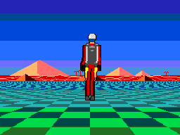
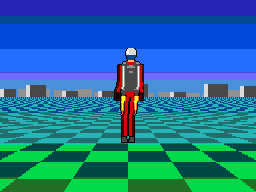

<title>Jetpack Desert</title>
<link rel="preconnect" href="https://fonts.googleapis.com">
<link rel="preconnect" href="https://fonts.gstatic.com" crossorigin>
<link rel="stylesheet" href="https://fonts.googleapis.com/css2?family=Chivo:ital,wght@0,400;0,700;0,900;1,400&family=IBM+Plex+Mono:wght@400;500;600&display=swap">
<style>
  :root {
    --sky:      #1e5ac8;
    --sand:     #ffb66d;
    --rose:     #ff6d6d;
    --ember:    #ff6d24;
    --deep:     #480000;
    --ink:      #1b1a18;
    --ink-soft: #55504a;
    --ground:   #f6f2ec;
    --panel:    #ffffff;
    --rule:     #e2dad0;
    --spare:    #cfc6ba;
    --shadow:   0 1px 2px rgba(27,26,24,.06), 0 8px 24px rgba(27,26,24,.06);
  }
  @media (prefers-color-scheme: dark) {
    :root:not([data-theme="light"]) {
      --ink:      #f3ece3;
      --ink-soft: #b3a99c;
      --ground:   #16110e;
      --panel:    #1f1813;
      --rule:     #352a22;
      --spare:    #3d3128;
      --shadow:   0 1px 2px rgba(0,0,0,.4), 0 10px 30px rgba(0,0,0,.35);
    }
  }
  :root[data-theme="dark"] {
    --ink:      #f3ece3;
    --ink-soft: #b3a99c;
    --ground:   #16110e;
    --panel:    #1f1813;
    --rule:     #352a22;
    --spare:    #3d3128;
    --shadow:   0 1px 2px rgba(0,0,0,.4), 0 10px 30px rgba(0,0,0,.35);
  }

  body {
    background: var(--ground);
    color: var(--ink);
    font-family: "Chivo", system-ui, -apple-system, "Segoe UI", sans-serif;
    font-size: 16px;
    line-height: 1.55;
    padding: 0 16px;
  }
  main { max-width: 760px; margin: 0 auto; padding-block: 40px 72px; }

  .eyebrow {
    font-family: "IBM Plex Mono", ui-monospace, monospace;
    font-size: 12px; font-weight: 600;
    letter-spacing: .14em; text-transform: uppercase;
    color: var(--ember);
    margin: 0 0 10px;
  }
  h1 {
    font-weight: 900; font-size: clamp(30px, 6vw, 44px);
    line-height: 1.05; letter-spacing: -.02em;
    text-wrap: balance; margin: 0 0 12px;
  }
  .standfirst {
    font-size: clamp(16px, 2.4vw, 19px); color: var(--ink-soft);
    max-width: 62ch; text-wrap: pretty; margin: 0 0 28px;
  }
  h2 {
    font-weight: 700; font-size: 20px; letter-spacing: -.01em;
    margin: 44px 0 6px; text-wrap: balance;
  }
  h2 + p { margin-top: 0; }
  p { max-width: 68ch; }
  .lede { color: var(--ink-soft); }

  figure { margin: 0; }
  .screen {
    background: var(--deep);
    border: 1px solid var(--rule);
    border-radius: 4px;
    box-shadow: var(--shadow);
    padding: 10px;
    display: flex; justify-content: center;
  }
  .screen img {
    display: block; width: 512px; max-width: 100%;
    height: auto; aspect-ratio: 4 / 3;
    image-rendering: pixelated;
  }
  figcaption {
    font-family: "IBM Plex Mono", ui-monospace, monospace;
    font-size: 12.5px; color: var(--ink-soft);
    margin-top: 10px; display: flex; flex-wrap: wrap; gap: 4px 14px;
  }
  figcaption b { color: var(--ink); font-weight: 600; }

  .budget { margin: 22px 0 0; }
  .bar {
    display: flex; height: 26px; border-radius: 3px; overflow: hidden;
    border: 1px solid var(--rule);
  }
  .bar span { display: block; height: 100%; }
  .seg-board  { background: var(--sky); }
  .seg-desert { background: var(--sand); }
  .seg-pilot  { background: var(--ember); }
  .seg-spare  { background: var(--spare); }
  .key {
    list-style: none; padding: 0; margin: 12px 0 0;
    display: grid; gap: 4px 20px;
    grid-template-columns: repeat(auto-fit, minmax(210px, 1fr));
    font-family: "IBM Plex Mono", ui-monospace, monospace;
    font-size: 13px; font-variant-numeric: tabular-nums;
  }
  .key li { display: flex; align-items: baseline; gap: 8px; }
  .key i {
    width: 9px; height: 9px; border-radius: 2px; flex: none;
    transform: translateY(-1px);
  }
  .key .n { margin-left: auto; color: var(--ink-soft); }

  .table-wrap { overflow-x: auto; margin-top: 14px; }
  table {
    border-collapse: collapse; width: 100%; min-width: 440px;
    font-size: 14.5px;
  }
  th, td { text-align: left; padding: 9px 12px 9px 0; border-bottom: 1px solid var(--rule); }
  th {
    font-family: "IBM Plex Mono", ui-monospace, monospace;
    font-size: 11.5px; font-weight: 600; letter-spacing: .1em;
    text-transform: uppercase; color: var(--ink-soft);
  }
  td.num, th.num {
    text-align: right; padding-right: 0;
    font-family: "IBM Plex Mono", ui-monospace, monospace;
    font-variant-numeric: tabular-nums;
  }
  tr.total td { font-weight: 700; border-bottom: none; }
  td .note { color: var(--ink-soft); font-size: 13px; }

  .rail {
    border-left: 3px solid var(--rose);
    padding: 2px 0 2px 16px; margin: 26px 0;
  }
  .rail p { margin: 0; }

  .then {
    display: grid; gap: 18px; align-items: start; margin-top: 14px;
    grid-template-columns: minmax(0, 1.1fr) minmax(0, 1fr);
  }
  @media (max-width: 620px) { .then { grid-template-columns: 1fr; } }
  .then .screen { padding: 8px; }
  .then img { width: 100%; }

  code {
    font-family: "IBM Plex Mono", ui-monospace, monospace;
    font-size: .92em;
    background: color-mix(in srgb, var(--rule) 55%, transparent);
    padding: 1px 5px; border-radius: 3px;
  }
  footer {
    margin-top: 52px; padding-top: 18px; border-top: 1px solid var(--rule);
    font-family: "IBM Plex Mono", ui-monospace, monospace;
    font-size: 12.5px; color: var(--ink-soft);
  }
</style>

<main>
  <p class="eyebrow">SAM Coupé · MODE 4 · 6 MHz Z80B</p>
  <h1>Jetpack Desert</h1>
  <p class="standfirst">
    <code>chequer8</code>: a chequered plane in the bottom 40% of the screen,
    a two-layer desert standing on it and scrolling by single pixels, and a
    pilot in a jetpack over the top of both — every pixel redrawn from
    scratch, every frame, in 190,655 T-states of the 240,000 a 25 Hz frame
    has.
  </p>

  <figure>
    <div class="screen">
      
    </div>
    <figcaption>
      <span><b>8 seconds</b>, 200 frames</span>
      <span><b>25 Hz</b>, each frame held for what it actually costs</span>
      <span><b>256 × 192</b>, 16 colours</span>
    </figcaption>
  </figure>

  <div class="budget">
    <div class="bar" role="img"
         aria-label="Frame budget: board 95,591 T-states, desert 79,758, pilot 14,401, and 49,345 spare of 240,000.">
      <span class="seg-board"  style="width:39.83%"></span>
      <span class="seg-desert" style="width:33.20%"></span>
      <span class="seg-pilot"  style="width:6.00%"></span>
      <span class="seg-spare"  style="width:20.55%"></span>
    </div>
    <ul class="key">
      <li><i class="seg-board"></i>the board<span class="n">95,591</span></li>
      <li><i class="seg-desert"></i>the desert<span class="n">79,758</span></li>
      <li><i class="seg-pilot"></i>the pilot<span class="n">14,401</span></li>
      <li><i class="seg-spare"></i>spare in a 25 Hz frame<span class="n">49,345</span></li>
    </ul>
  </div>

  <h2>What it costs</h2>
  <p class="lede">
    Every number here was measured on an emulated Z80 against a Python model of
    the same picture, frame by frame — not estimated.
  </p>
  <div class="table-wrap">
    <table>
      <thead>
        <tr><th>Part of the frame</th><th class="num">T-states</th></tr>
      </thead>
      <tbody>
        <tr>
          <td>The board — 77 scanlines, the bottom 40% of the screen<br>
              <span class="note">a camera of its own: the horizon at row 114, not 96</span></td>
          <td class="num">95,640</td>
        </tr>
        <tr>
          <td>The desert — 32 scanlines, two layers<br>
              <span class="note">rear layer 46,110 · front layer 33,648 over 57 spans</span></td>
          <td class="num">79,758</td>
        </tr>
        <tr>
          <td>The pilot — all 96 rows of him, compiled<br>
              <span class="note">63 rows of run-length stream cost 46,793</span></td>
          <td class="num">14,401</td>
        </tr>
        <tr class="total">
          <td>A frame, mean<br>
              <span class="note">min 184,932 · max 196,121 · worst frame found 196,121</span></td>
          <td class="num">190,655</td>
        </tr>
      </tbody>
    </table>
  </div>

  <h2>The parallax comes off the camera</h2>
  <p>
    A layer at depth <i>Z</i> moves <code>FOCAL · camx / Z</code> pixels when
    the camera slides sideways, so the two offsets are the board's own
    <code>camx</code>, tripled and shifted right — by six for the great
    pyramid and its dune field, by five for the three smaller pyramids in
    front of them. Slide the camera right by 192 world units and the board's
    bottom row goes 48 pixels left, the front pyramids 18, and the great one
    9. At the camera's fastest that is <b>two pixels a frame for the front
    layer and one for the rear</b> — and because the front is the same number
    shifted one place less, it is exactly twice the rear however the camera
    moves.
  </p>
  <p>
    It is a fudge, and worth naming as one: anything drawn above the horizon
    line is strictly at infinity and has no parallax at all — scenery moving
    as though it stood 2,357 world units away would properly be drawn
    twenty-nine scanlines <i>below</i> the horizon. What the trade buys is
    scenery that sways with the ground under it instead of drifting past on a
    clock of its own. And moving two pixels a frame is not the same as moving
    a byte: the offset is odd on half of all cameras, so every span end still
    lands inside a byte as often as it ever did.
  </p>
  <div class="rail">
    <p>
      So the rear layer is <b>compiled</b> — one straight run of <code>PUSH</code>es
      per scanline per pixel phase, 79K of it in pages of its own, each run
      stopped exactly where its 64th push lands by a <code>JP</code> written over
      three bytes and put back afterwards. Detail in it costs memory rather than
      time, which is why it can afford two faces and a course of stone on the great
      pyramid, palms, three ridges of dune and a scatter of rocks. The near
      pyramids cannot be part of that run — they have to leave it showing — so they
      go on as spans, and where a span's edge lands inside a byte the byte is read,
      masked and written. <b>That mask is what lets them pass in front.</b>
    </p>
  </div>

  <h2>What it replaced</h2>
  <div class="then">
    <figure>
      <div class="screen">
        
      </div>
      <figcaption><span><b>chequer7</b> · 201,281 T-states</span></figcaption>
    </figure>
    <p>
      The city scrolled by whole bytes — two pixels a step, at fifty and a hundred
      pixels a second — and was built out of rectangles worked out at run time, so
      every piece of detail would have been another rectangle a row. It cost more
      than the desert does and showed less.
    </p>
  </div>

  <h2>And nothing is drawn once per buffer</h2>
  <p>
    The pilot used to be split in half: the rows above the board went into each
    buffer once, because nothing painted over them. Compiling him — every solid
    run a <code>PUSH</code> pair, every odd byte a store, and the 110 bytes where
    only one of his two pixels is his the only read-modify-write left — brought all
    96 rows down to 14,479 T-states, cheap enough to redraw whole. So the split is
    gone, and with it the clearing, the per-buffer bookkeeping, and the rule that
    nothing was allowed to move underneath him.
  </p>
  <p>
    The bill for all that compiling is pages: twenty of the thirty-two the SAM's
    <code>LMPR</code> can address. This is the first demo in the repo that wants a
    512K machine.
  </p>

  <footer>
    Z80AIexperiments · chequer8.z80s, desert.z80s, tests/mkjetrun.py ·
    bit-exact against tests/chequer8.py over 260 camera positions
  </footer>
</main>
